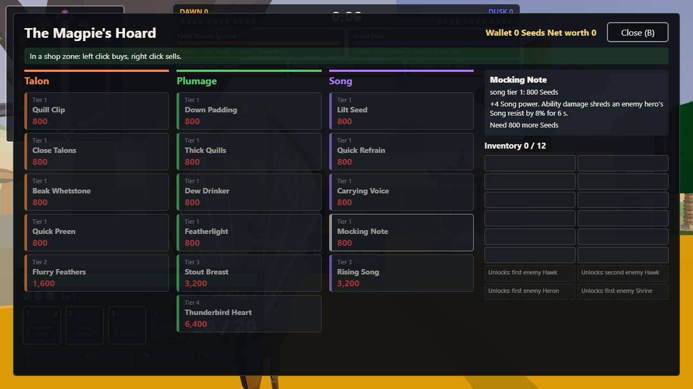

The Magpie's Hoard
The Hoard is the shop. Seeds you have not spent buy items from three columns, Talon, Plumage and Song, across four tiers. 16 items are in the shop now; 32 more are planned for Stage 4.

Categories
| Column | What it does | In the shop | Planned |
|---|---|---|---|
| Talon | Gun power: damage, fire rate, magazine and reload. | 5 | 11 |
| Plumage | Vitality: health, resists, regeneration and movement. | 6 | 10 |
| Song | Ability power: Song power, cooldowns, range and ability effects. | 5 | 11 |
Tiers and prices
| Tier | Price (Seeds) | In the shop | Planned |
|---|---|---|---|
| Tier 1 | 800 | 12 | 0 |
| Tier 2 | 1,600 | 1 | 11 |
| Tier 3 | 3,200 | 2 | 10 |
| Tier 4 | 6,400 | 1 | 11 |
How buying works
Open the Hoard with the shop key. You can browse it anywhere, but buying and selling only work inside a shop zone: your Home Roost, or one of your flock's Magpie stalls on the lanes. Left click an item to buy and right click to sell.
You spend unspent Seeds on items. Seeds you have already earned still count towards your level, whether you spend them or not, so buying never lowers your level.
Upgrade chains
Many items are the upgrade of a lower-tier item (the component). If you own the component, the upgrade costs only the price difference and takes the component's slot. Without it you pay full price and need a free slot.
Actives
Some items have an active ability. The first four active items you own, in slot order, are bound to the four item keys. Cooldowns are shown on the HUD.
Flex slots
Beyond the base slots, four flex slots unlock for the whole flock when it destroys certain enemy structures. See Economy.
- Slots: 12 base slots hold any category, each item once. Four more flex slots unlock for your whole flock from objectives; see flex slots.
- Selling: you get back 50% of the full price, or all of it if you sell within 20 s of buying during the same shop visit.
- Upgrades: buying an item whose component you own costs only the difference, and replaces the component in its slot.
- Dew Drinker style regeneration: some items add health regeneration that rises by 10 HP/s after 8 s without taking damage.
- Ability upgrades are separate: they cost Ability Points (1, 2, 5 AP per tier), not Seeds. See Ability Points.